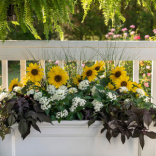

Sunflowers that are grown with care can brighten up your beloved home with a fun pop of yellow. These thrive and bloom continuously all season long and get up to between 3 to 4 feet high. They are low maintenance and drought tolerant flowers that grow in most soil conditions.